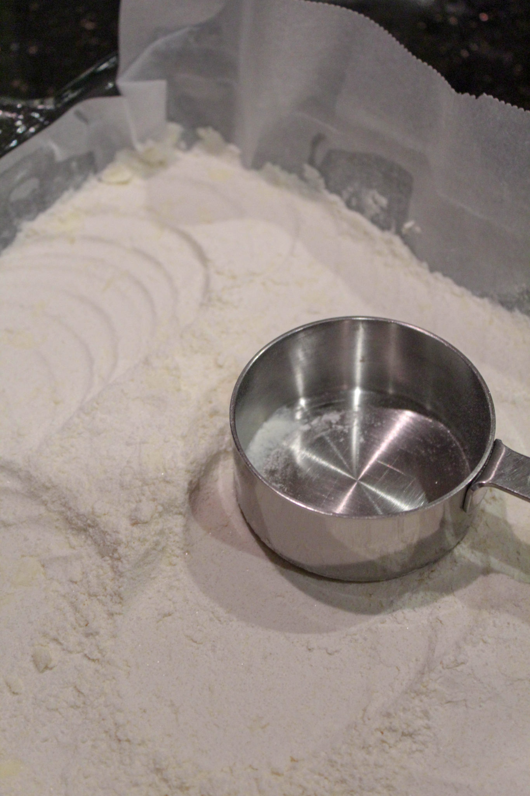

RECETTE POUR LES BARRÉS AU CITRON (cuisinés dans un plat de 9 "x 13")
Ingrédients:
2 bâtonnets de beurre non salé, à température ambiante
1/2 tasse de sucre en poudre
2 tasses de farine tout usage
1/2 cuillère à café de sel
4 gros œufs
7 cuillères à soupe de jus de citron frais
Zeste d'un citron
1 3/4 tasse de sucre granulé
1/3 tasse de farine
Sucre en poudre pour garnir
Préchauffez le four à 350 degrés. Préparez un plat de 9 "x 13". Vaporisez d'enduit à cuisson, puis tapissez de papier parchemin. Pressez dans les coins et sur les côtés.
Pour la croûte, mélangez le beurre, le sucre en poudre, 2 tasses de farine et le sel. Mélangez à l'aide d'un coupe-pâte, jusqu'à ce que des miettes de la taille de pois se forment. Versez dans le plat préparé et pressez uniformément et fermement à l'aide du fond d'un verre doseur.

Faites cuire pendant 15 à 20 minutes. NE laissez PAS brunir - retirez du four lorsqu'il
semble légèrement gonflé et "pris".
Pendant que la croûte cuit, préparez le mélange de citron et d'œuf. Dans un batteur sur
socle ou en utilisant un grand bol et un fouet, mélangez les œufs, le jus de citron, le
zeste de citron, le sucre et 1/3 de tasse de farine. Fouettez jusqu'à ce qu'il soit
"mousseux" - environ 1 minute.
Retirez la croûte du four. Étalez soigneusement le mélange de citron et d'œuf sur le
dessus à l'aide d'une grande cuillère. Cela distribuera uniformément le liquide sans
perturber la croûte.
Replacez le plat au four et faites cuire pendant encore 20 minutes, jusqu'à ce qu'il soit
pris. Retirez du four et laissez refroidir.
Saupoudrez généreusement de sucre glace et découpez selon la taille désirée. Ils se
conserveront au réfrigérateur pendant une semaine.